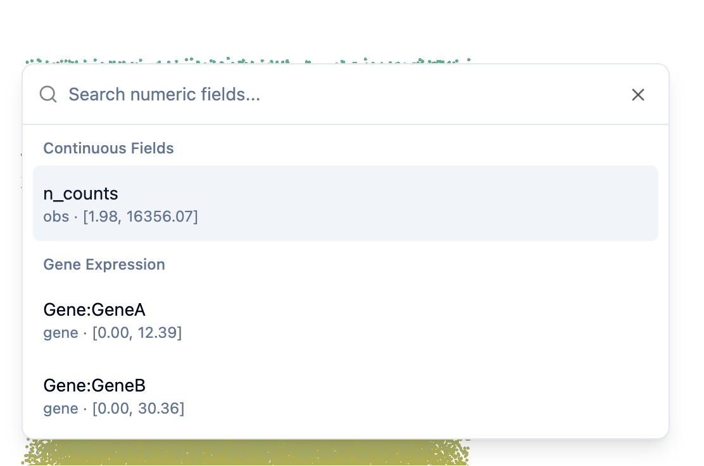

Interactive Controls¶
Learn how to interact with SpatialVista visualizations in Jupyter.
Navigation¶
3D/2D View Controls¶
- Rotate: Drag or Shift + ↑↓←→
- Pan: Shift + Drag or ↑↓←→
- Zoom: Mouse wheel scroll
Annotation Panel¶
The left sidebar allows you to switch between different categorical annotations.
Features¶
- Switch Annotations: Click on different annotation types to change the coloring
- Hide/Show Categories: Click on category names in the legend to toggle visibility
- Custom Colors: Click on color swatches to open the color picker and change category colors

Control Panel¶
The right panel provides controls for adjusting visualization parameters.

Point Size¶
Adjust the size of individual points in the visualization.
- Use the slider to increase or decrease point size
- Useful for sparse or dense datasets
Point Opacity¶
Control the transparency of points.
- Lower values: More transparent (better for seeing overlapping structures)
- Higher values: More opaque (better for sparse data)
Layout Modes¶
Switch between different spatial arrangements:
- Original: Display points at their original coordinates
- 2D Treemap: Arrange points in a space-filling treemap layout
- 2D Histogram: Arrange points in histogram bins

Continuous Values & Gene Expression¶
Selecting Variables¶
Use the dropdown menu to select continuous values or gene expression:
- Continuous observations: QC metrics, cell scores, etc.
- Gene expression: Any gene from your dataset 
Threshold Slider¶
When a continuous value or gene is selected, a slider appears at the bottom:
- Adjust threshold: Move the slider to filter points by value
- Color gradient: The background shows the value range
- Reset: Click the reset button to return to minimum value

View Switching¶
2D/3D Toggle¶
If your data has section information, you can switch between views:
- 3D View: Full 3D point cloud
- 2D View: Section-by-section 2D slices
Section Carousel¶
In 2D mode, use the section carousel to browse different slices:
- Click thumbnails: Jump to a specific section
- Preview: Each thumbnail shows a preview of that section

Screenshots¶
Capture Current View¶
Click the camera icon in the header to save the current visualization:
- Captures exactly what you see on screen
- Downloads as PNG image
- Includes current colors, filters, and layout
Next: Check the API Reference for programmatic control options.